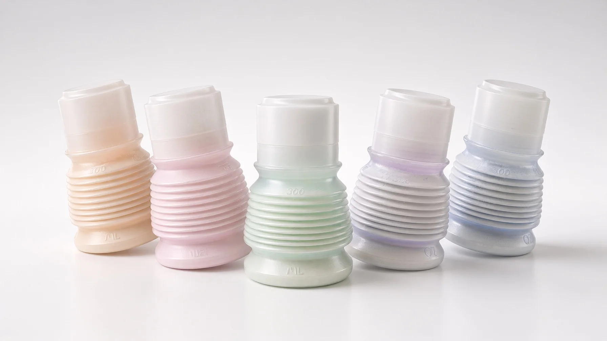
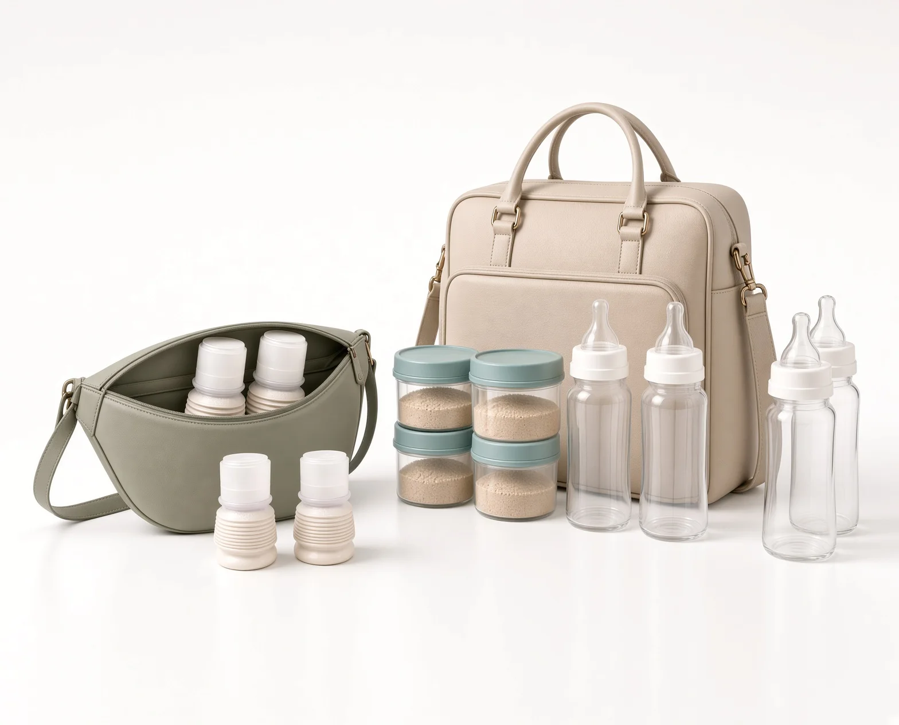
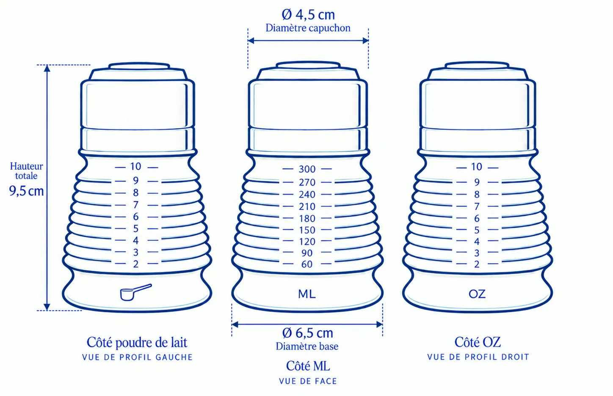
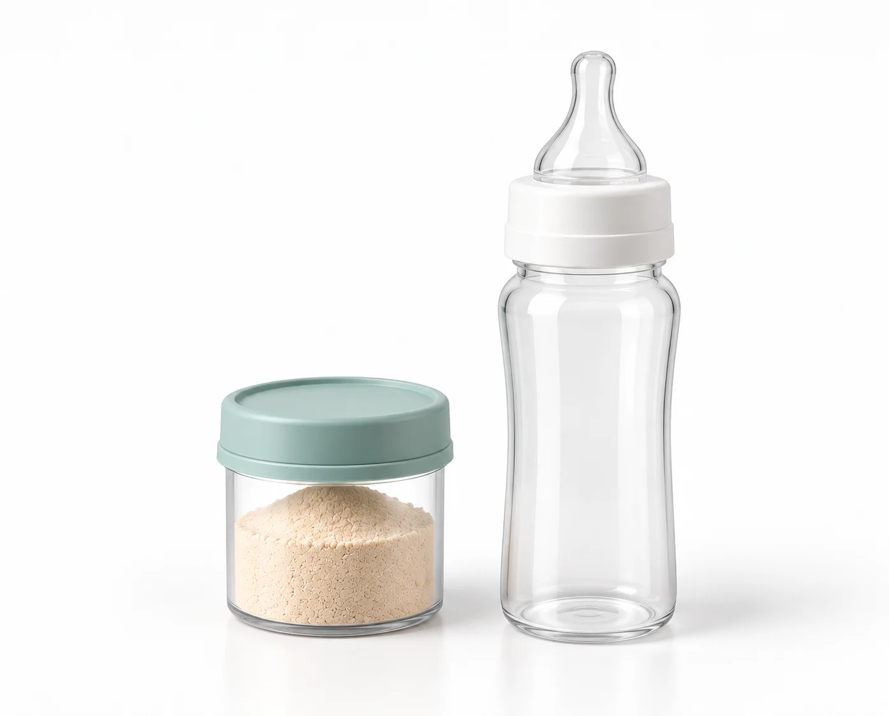
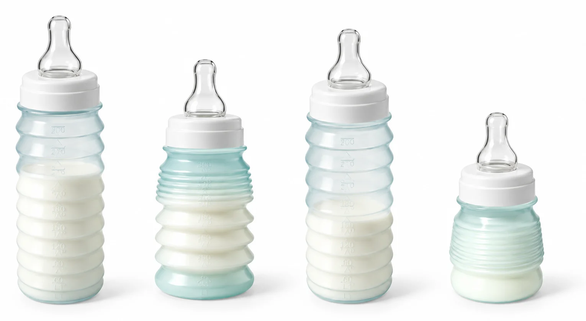

Le biberon pratique
Pourquoi ce petit biberon est-il si pratique pour les sorties ?
Moins à porter.
Moins à démonter.
Moins à laver.
Moins de gestes quand bébé a faim.
Tout dedans. Rien autour.
Un biberon pratique, ce n’est pas un biberon qui fait plus de choses. C’est un biberon qui en demande moins : moins de pièces à sortir, à poser quelque part, à reprendre — et chacune touche l’intérieur du flacon ou la tétine. Tout ici a été pensé pour faciliter les manipulations dehors, là où rien n’est à portée de main.

01 · Le transport
Jusqu’à quatre fois moins d’encombrement.
- Un biberon rigide. Une boîte doseuse. Un obturateur. Un mélangeur anti-grumeaux.
- Avec BIBEON, leurs fonctions sont déjà intégrées : la dose voyage dans le flacon, le capuchon compacteur obture la tétine, les soufflets font office de shaker.
- Replié, BIBEON tient dans la moitié de la hauteur d’un biberon classique.
Plus de fonctions dans le biberon. Moins d’objets dans le sac.

Ses dimensions, replié.

02 · Pas besoin de boîte doseuse
Ce que la boîte doseuse supposait.
La transporter, aller et retour, même vide.La chercher au fond du sac.Transvaser, sans en mettre à côté.La laver au retour. La sécher.
La dose voyage dans le biberon.

03 · Pas besoin de mélangeur anti-grumeaux
Il est son propre shaker.
- Déployés, les soufflets forment à l’intérieur une succession de creux.
- En secouant, les amas de poudre s’y brisent et se dispersent : BIBEON est son propre shaker.
- Pas de mélangeur anti-grumeaux, pas de grille, rien à laver séparément.
04 · Pas besoin de valve
On n’ajoute pas une valve. On enlève l’air.
- Le lait descend. BIBEON aussi.
- Le lait diminue. Abaissez les soufflets jusqu’à son niveau. Moins d’espace d’air dans le flacon.
- En fin de tétée, coudez légèrement BIBEON. La tétine reste pleine de lait.
Le volume et la forme s’adaptent. À la demande.

05 · Pas besoin d’obturateur
Il comprime. Il obture. Il est stable.
- Le capuchon comprime la tétine dans sa base et se serre sur l’épaulement de la bague : deux centimètres gagnés, et trois pièces devenues un seul bloc.
- Son toit plat vient obturer l’orifice de la tétine rentrée. Le biberon est hermétique et sans fuite de liquide — l’obturateur devient inutile.
- Retourné, le bloc repose sur la face plate du capuchon. La tétine pointe vers le haut, sans jamais toucher la table.
Une seule pièce, trois contraintes en moins.
06 · L’hygiène en déplacement
Dans une cuisine, c’est facile. Dehors, beaucoup moins.
- Sur un banc, dans un train, à la terrasse d’un café : les mains ne sont pas toujours propres, et il n’y a pas de plan de travail.
- Le bloc — bague, tétine, capuchon — se dévisse et se repose d’un seul geste. Les doigts tiennent le capuchon, jamais la tétine.
- Si la tétine reste rentrée, le bord du capuchon la déloge — toujours sans les doigts.
Tout se passe par l’extérieur.
07 · La légèreté
35 g. Sans faire fragile.
- Environ 35 g, tout compris.
- Peu de masse à tenir, un corps étroit : il tient sur un doigt.
- Aussi léger sans être fragile, c’est là que le travail a été long.
Léger ne veut pas dire moins conçu.

Finalement, c’est quoi ?
Ce n’est pas un capuchon intelligent qu’il faudrait admirer. Ni des soufflets qu’il faudrait venir étudier. C’est ce qu’ils permettent de ne plus subir.
- Moins lourd.
- Moins encombrant.
- Moins de pièces.
- Moins à démonter et à laver.
- Moins de grumeaux.
- Moins d’air à avaler.
- Moins de risques de fuite.
- Moins de gestes à faire dehors, pendant que bébé a faim.
BIBEON n’a pas été dessiné pour avoir davantage de fonctions visibles.
Il a été dessiné pour laisser moins de contraintes aux parents.
La boutique
Cinq coloris. À partir de 35 €.

Lin·Menthe·Rose·Lilas·Abricot
Point relais offert·domicile 3,50 €·retour offert sous 30 jours
Le biberon, l’R en moins®.